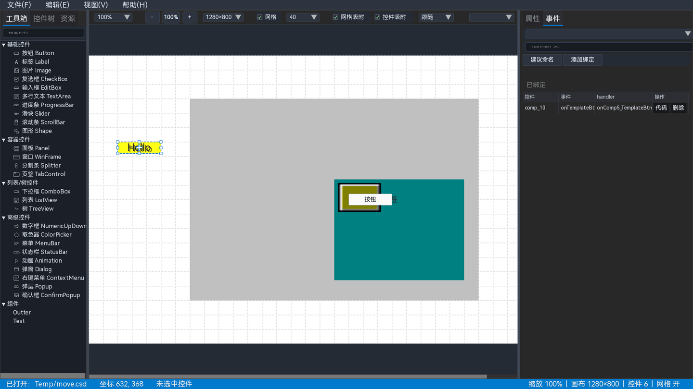

11 事件面板
事件面板把一个控件事件绑定到一个 C/C++ 函数名。导出时，设计器会把这些绑定写成事件代码和函数骨架。

图 11-1 事件页签：上方是新增绑定，下方是已绑定事件
11.1 绑定一个事件
- 在画布或控件树选中目标控件。
- 点击右侧“事件”页签。
- 在“事件”下拉框选择事件类型，例如按钮的
onClick。 - 在 handler 输入框填写函数名，例如
onSaveClick。 - 点击“建议命名”可生成一个基于控件 ID 和事件名的函数名。
- 点击“添加绑定”，绑定出现在“已绑定”列表。
11.2 已绑定列表
| 列 | 说明 |
|---|---|
| 控件 | 绑定所属控件的 ID |
| 事件 | 事件类型 |
| handler | 导出代码中的函数名 |
| 操作 | “代码”编辑函数体，“删除”移除绑定 |
列表行是只读输入框，内容过长时可以横向滚动或选中复制。
11.3 编写 handler 代码
- 在已绑定行点击“代码”。
- 在编辑窗中编写包含文件与函数体；函数签名由设计器生成。
- 应用后代码随工程保存，并在导出 C/C++ 工程时写入事件文件。
不同事件的参数由运行时决定；设计器生成签名骨架，你只需要填写函数体。
11.4 命名和冲突
- handler 必须是合法的 C/C++ 标识符。
- 同一工程中多个绑定使用同一个 handler 时，可能是共享函数，也可能是冲突；设计器会在列表中提示。
- 非法名称或冲突可能导致导出被阻止。
- 修改控件 ID 时，如果代码中引用了旧 ID，设计器会询问是否同步替换。
不要使用 C/C++ 关键字、空格、横线或以数字开头的名称。建议使用“控件名 + 动作”的 PascalCase 形式。
11.5 组件事件 _comp_
组件模板内部控件的事件名使用 _comp_ 前缀。切换到组件实例时，事件面板会扫描模板中的 _comp_ 键，允许把实例事件绑定到宿主 handler。
- 模板事件：定义组件内部哪些动作可以被外部接收。
- 实例事件：给当前实例指定实际 handler。
- 导出时只生成实例侧的宿主 handler，不生成模板内部的
_comp_占位。
详见 组件系统。
11.6 菜单、状态栏与右键菜单条目事件
MenuBar、StatusBar、ContextMenu 的条目不是普通画布控件，事件页签会显示对应的条目树：
| 控件 | 事件树 | 绑定位置 |
|---|---|---|
| MenuBar | 菜单/子菜单层级 | menus[].items[].events.onClick |
| StatusBar | 状态栏分区 | items[].events.onClick（状态栏条目树） |
| ContextMenu | 右键菜单条目 | items[].events.onClick（右键菜单条目树） |
- 选中 MenuBar、StatusBar 或 ContextMenu 控件。
- 切换到事件页签，在条目树中选择具体条目；分隔符不可绑定。
- 填写或建议 handler，点击“绑定/更新”；已有绑定可按“代码/删除”维护。
- ContextMenu 还需在属性面板的“目标控件”中选择响应右键的控件 id 或画布根。
- 预览/导出后点击条目，确认 action 执行。
条目文本修改后，事件按结构路径/数组下标保留；插入、删除或重排条目可能导致路径失效，设计器会提示重新检查。
11.7 事件与导出的关系
| 操作 | 结果 |
|---|---|
| 添加/删除绑定 | 修改当前工程的绑定集合 |
| 编辑 handler 代码 | 保存函数体与包含文件 |
| 导出 JSON | 布局中保留事件字段，不生成 C/C++ 代码 |
| 导出 C/C++ 工程 | 生成事件头文件、实现骨架/已编辑代码、事件清单 |
事件类型和参数的完整列表见 附录 C，底层语义见 UICornerstone 文档。